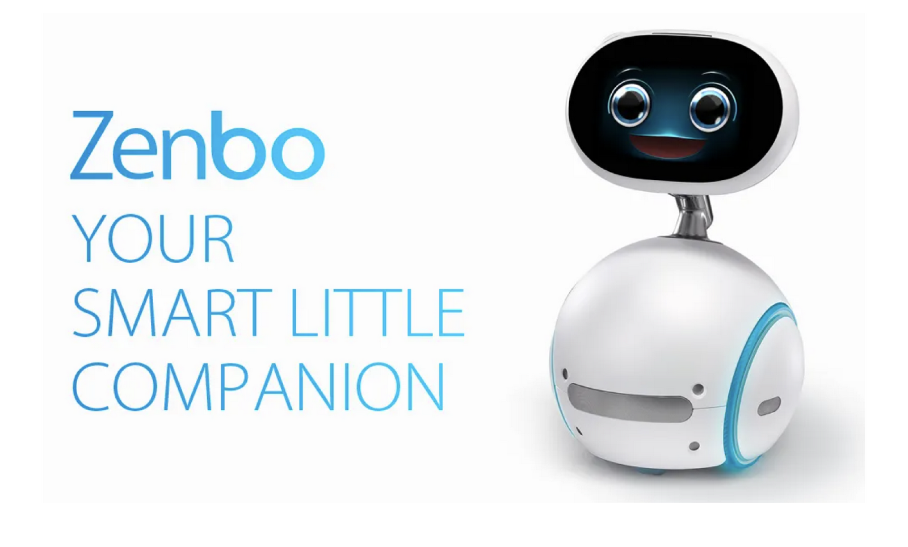
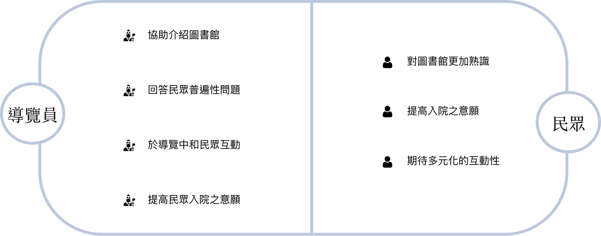
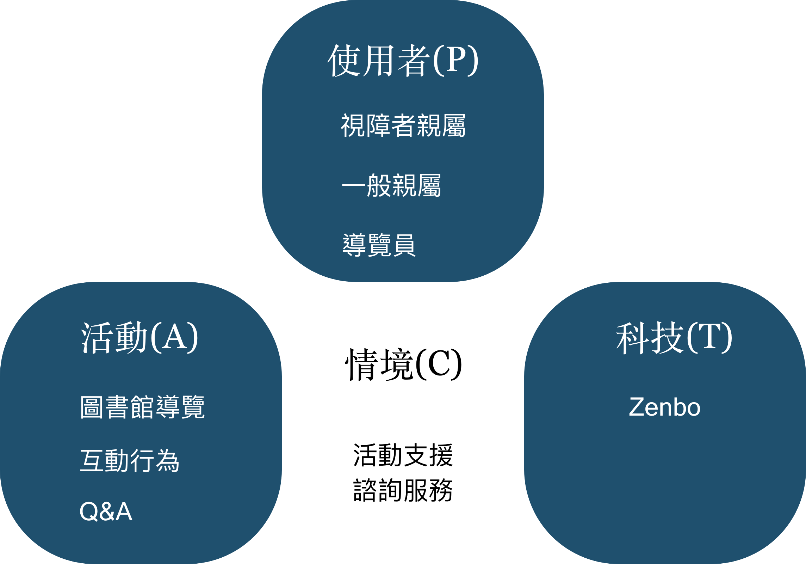
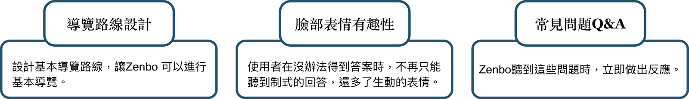

臺灣圖書館導覽優化
>
受國立臺灣圖書館委託，進行視障資料中心互動式機器人優化。主要目的為減輕導覽員工作負擔，次要目的則為增加民眾日後前往的意願。此專案亦獲得東吳大學理學院創意競賽第一名。
專案時間：2019.02 - 2019.04
專案負責項目：PACT 架構分析、規劃並共同執行場域易用性測試及分析、共同進行Zenbo程式開發。
對於視障資料中心的導覽員來說，平常在圖書館的行政工作加上每日固定的導覽行程已經很繁忙了，若在非導覽時間來的散客，導覽員還要花額外的時間進行導覽，因此希望可減輕目前在導覽工作上的負擔。 對中心主任來說，視障資料中心的來客數逐月下降，且由導覽員進行的導覽流程過於單調，因此希望可給予民眾更多元有趣的導覽體驗。

希望能透過Asus Zenbo的介入，減輕導覽員工作負擔與增加民眾日後前往的意願。

Zenbo 協助介紹圖書館服務 (導覽員可轉為輔助介紹之角色)
1. 於導覽中和民眾進行互動
2. 提高民眾對圖書館的熟識度
3. 增加多元的互動性
4. 提高日後入館意願
5. 回答民眾普遍性的問題，例如：幾點開門？其它中心位置在哪？
首先針對館方進行需求訪談，了解館方對於的需求與期待。館方主要希望能透過 Zenbo 的介入減輕視障資料中心導覽員的導覽工作負擔，並想透過 Zenbo 給予入館民眾不同於以往真人導覽的體驗，藉此提高入館意願。
以互動式介面之 PACT 架構進行分析，協助釐清 Zenbo 互動過程中的使用者、互動情境及活動。Zenbo 主要活動場域為視障資料中心與圖書館一樓大廳，主要服務對象為視障者親屬、一般民眾，提供他們基本的圖書館導覽與常見Q&A問答。
後續與館方討論並決定欲優化之功能面向，並利用Asus 內建之App Builder 進行程式開發。
找來10 位民眾實際進行導覽，利用觀察法進行記錄與整理，並針對測試結果進行後續改善，想得到：
1. Zenbo
是否可給予民眾正確的互動回饋
2. 後續優化方向
場域易用性測試中，主要發現有3：
1. Zenbo 僅於民眾於櫃檯提問時給予正確互動回饋
2. Zenbo
無法正確接收到民眾指令時，會給予表情變化，民眾則因表情變化覺得新鮮，並無不耐煩的反應
3. Zenbo 給予民眾錯誤回饋時，導覽員的介入可讓導覽流程繼續進行
Asus Zenbo 雖然能藉由互動式機器人提供民眾更新鮮有趣的導覽體驗，但於場域易用性測試中發現，Zenbo
無法正確接受到民眾指令原因有2：
1. 本身硬體聲音接收器無法同時辨識多個音訊來源，若遇到多人同時講話會無法讀取指令
2. 本身硬體聲音接受器於吵雜環境中會干擾指令的接收速度及正確度
也因為上述本身硬體限制，團隊難以針對 Zenbo 於多人同時發出指令與吵雜環境導覽之情境，去提高接受指令的正確率。因此團隊找尋的替代方案為，在無法接收指令時，Zenbo
給予多元的表情變化或給予語音回饋請導覽員進行介入，讓導覽流程繼續進行。
針對2位資深導覽員與2位先前參與過真人導覽的民眾，進行結構式訪談，主要想了解：
1. Zenbo
的介入是否有分擔導覽員的工作
2. Zenbo 的介入是否讓民眾覺得有趣及新鮮
而經由結構式訪談得知，在 Zenbo 的介入後，確實能分擔他們於導覽工作上的負擔，不需要每次導覽都親自進行，可部分交給 Zenbo，並認為 Zenbo 的介入對他們來說是有趣的體驗。
而對民眾而言，Zenbo 的介入確實也與以往透過導覽員的導覽行程有所不同，增加了互動的豐富性，並認為 Zenbo
的臉部表情或聲音確實會願意為了和它互動而增加前往的意願。而此專案於後續參加東吳大學理學院創意競賽，並獲得第一名的成績。